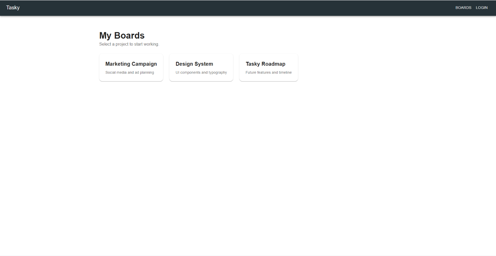
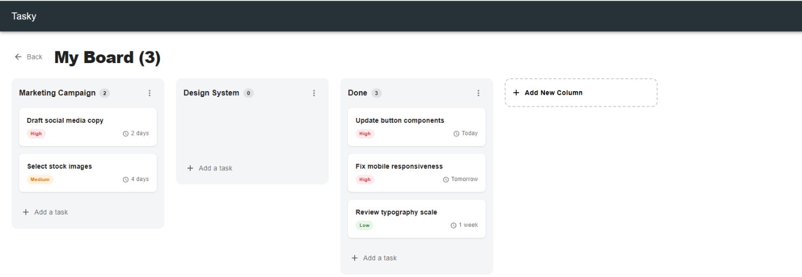
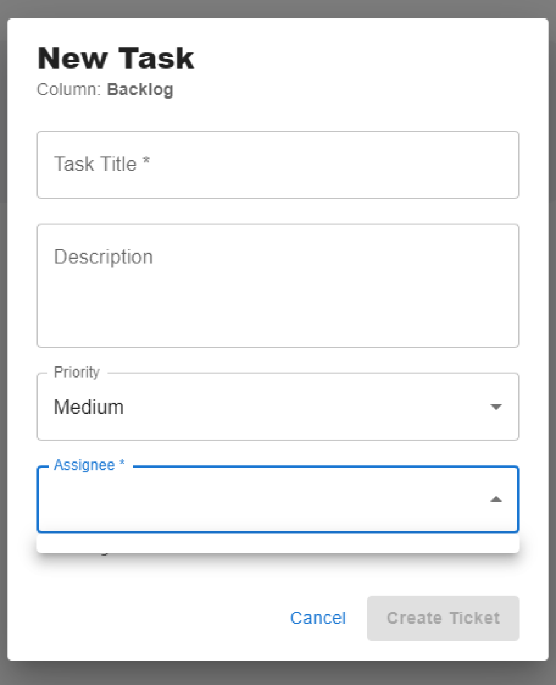

Software development
Tasky
Team Task Management Platform
An internal task management platform built for GoPanda's product team to manage tickets, comments, assignments, and work status in one place.
- Date
- December 2025 - January 2026

Overview
Tasky brings day-to-day product work into a shared workspace. The team can create and assign tickets, discuss work through comments, track activity, and follow tasks through their status workflows.
The Problem
The product team needed a shared way to manage tasks and see how work changed over time. Tasky brings tickets, assignments, comments, and activity tracking together in one internal application.

Process
Map the workflows
Worked on the core task flow: creating tickets, assigning work, adding comments, and updating status.
Build the application
Contributed to a MERN stack platform with a React frontend and Node.js and Express backend, backed by MongoDB.
Add operational safeguards
Helped implement role-based access control, audit logging, API documentation, and rate limiting.

Design direction
A practical workspace centered on the information teams need to move tasks forward: ownership, discussion, status, and activity.

The details
The application includes more than 20 REST endpoints, role-based permissions, activity logs, and five-tier rate limiting.
Outcome
Delivered an internal task management platform for GoPanda's product team. Tasky supports ticket management, comments, assignments, activity tracking, and status workflows, with backend controls for permissions and API traffic.